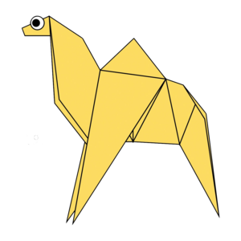
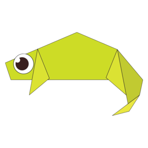
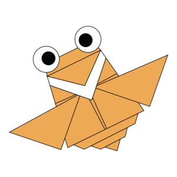
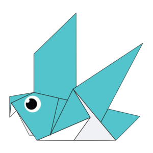

the first project is simple origami camel 
here are some facts about camels
1.There are two types of camels: One humped or “dromedary” camels and two humped Bactrian camels.
2.Camels have three sets of eyelids and two rows of eyelashes to keep sand out of their eyes.
3.Camels have thick lips which let them forage for thorny plants other animals can't eat.
the second project is advanced origami chameleon 
1. The biggest mistake people make about chameleons.
2. Chameleons have eyes in the backs of their heads.
3. Chameleons can communicate through their colors.
the third project is origami cicada 
1. Cicadas can survive a huge fall as babies, or nymphs. They are about the size of a grain of rice when they drop from a tree branch to the ground and start digging.
2. The loud whirring or buzzing sound you hear is an all-male cicada chorus. (Females make a much quieter sound by flicking their wings.) Cicadas don’t sing at night, so don’t blame them if you can’t sleep.
3. Most have red-orange eyes. But occasionally cicadas have blue, white or grayish eyes. Keep on the lookout.
the fourth project is cute origami panda
1. A giant panda is much bigger than your teddy bear.
2. Giant pandas are good at climbing trees and can also swim.
3. Prehistoric pandas lived up to 2 million years ago.
the fifth project is classic origami pigeon 
1.Pigeons have been present with humans since ages
2.Pigeons have fought alongside humans in World War I and II
3.Despite the social perception as dirty and disease-ridden, pigeons are actually very clean animals and there is very little evidence to suggest that they are significant transmitters of disease.